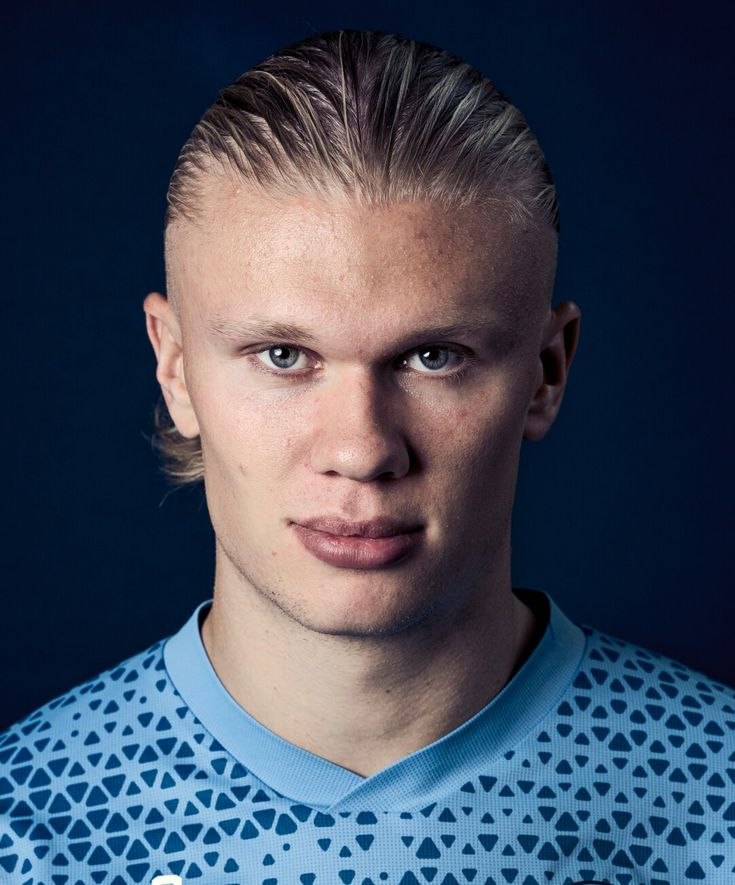

Cristiano Ronaldo
Cristiano Ronaldo Cristiano Ronaldo waa ciyaaryahan kubadda cagta ah oo u dhashay Portugal. Waxa uu ku dhashay 5 Febraayo 1985 magaalada Funchal ee Madeira. Ronaldo waxa uu u soo ciyaaray kooxo waaweyn sida Manchester United, Real Madrid iyo Juventus. Waxa uu ku guuleystay koobab iyo abaalmarino badan, isaga oo ka mid ah ciyaartoyda ugu fiican taariikhda kubadda cagta. Ronaldo waxaa lagu yaqaan dadaal, xirfad sare iyo goolal badan oo uu dhaliyay.
Lionel Messi
waa ciyaaryahan kubadda cagta ah oo u dhashay Argentina. Waxa uu ku dhashay 24 Juun 1987 magaalada Rosario. Messi waxa uu caan ku yahay xirfaddiisa sare, baasaskiisa quruxda badan iyo goolashiisa badan. Waxa uu u soo ciyaaray kooxaha FC Barcelona, Paris Saint-Germain iyo Inter Miami CF. Messi waxa uu ku guuleystay koobab iyo abaalmarino badan, isaga oo ka mid ah ciyaartoyda ugu fiican taariikhda kubadda cagta.
Kylian Mbappé
waa ciyaaryahan kubadda cagta ah oo u dhashay Faransiiska. Waxa uu ku dhashay 20 Diseembar 1998 magaalada Paris. Mbappé waxa uu caan ku yahay xawaarihiisa, xirfaddiisa iyo goolashiisa badan. Waxa uu u soo ciyaaray kooxaha AS Monaco, Paris Saint-Germain iyo Real Madrid. Mbappé waxa uu ka mid yahay ciyaartoyda ugu fiican dunida maanta, wuxuuna ku guuleystay koobab badan oo muhiim ah.

Erling Haaland
waa ciyaaryahan kubadda cagta ah oo u dhashay Norway. Waxa uu ku dhashay 21 Luulyo 2000 magaalada Leeds ee England. Haaland waxa uu caan ku yahay xooggiisa, xawaarihiisa iyo goolal badan oo uu dhaliyo. Waxa uu u soo ciyaaray kooxaha Red Bull Salzburg, Borussia Dortmund iyo Manchester City. Haaland waxa uu ka mid yahay weeraryahanada ugu fiican dunida maanta, wuxuuna ku guuleystay koobab iyo rikoorro badan.